UDN
Search public documentation:
MobileMaterialReferenceJP
English Translation
中国翻译
한국어
Interested in the Unreal Engine?
Visit the Unreal Technology site.
Looking for jobs and company info?
Check out the Epic games site.
Questions about support via UDN?
Contact the UDN Staff
中国翻译
한국어
Interested in the Unreal Engine?
Visit the Unreal Technology site.
Looking for jobs and company info?
Check out the Epic games site.
Questions about support via UDN?
Contact the UDN Staff
モバイル用ホーム > モバイル プラットフォームのためのマテリアル
UE3 ホーム > マテリアルとテクスチャ > モバイル プラットフォームのためのマテリアル
UE3 ホーム > 背景アーティスト / キャラクターアーティスト > モバイル プラットフォームのためのマテリアル
UE3 ホーム > マテリアルとテクスチャ > モバイル プラットフォームのためのマテリアル
UE3 ホーム > 背景アーティスト / キャラクターアーティスト > モバイル プラットフォームのためのマテリアル
モバイル プラットフォームのためのマテリアル
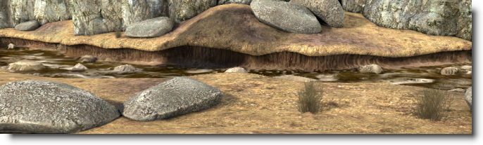
概要
「Unreal Engine 3」においては、モバイル用マテリアルを作成するためのワークフローは、通常のマテリアル作成のワークフローと若干異なります。以前に「Unreal」のエディタでマテリアルを作成した経験があれば、おそらく式から成るシェーダー ネットワークを構築することに慣れていることでしょう。デフォルトでは、モバイル マテリアルは、シェーダー ネットワークを使用せずに一連の固定されたスイッチと設定項目から生成します。 モバイル専用の各種マテリアル設定項目は、 マテリアル エディタ のプロパティ ウィンドウに置かれています。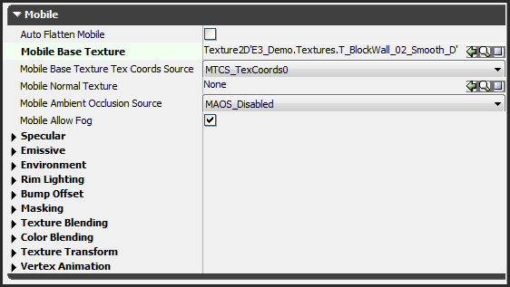
モバイル マテリアルの設定値は、通常のシェーダー ネットワーク マテリアル データと一緒に保存されます。したがって、モバイル プラットフォームと他のプラットフォーム (PC および コンソール) の両方において、メッシュをレンダリングするために同一のマテリアルを使用することになります。ただし、モバイル プラットフォームにおいては、シェーダー ネットワークの式によってではなく、モバイル専用のプロパティによって、マテリアルのビジュアルが制御されます。 これによって、モバイル プラットフォームと PC またはコンソールの両方に最適化してレンダリングされる、単一のマテリアルを作成することが可能になります。 なお、マテリアルのシェーダー ネットワークからモバイル テクスチャを自動的に作成することも可能です。そのためには、マテリアルをテクスチャの中に「 平坦化? 」します。モバイル マテリアルをプレビューする
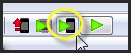
注意: エディタ ビューポートでは、マテリアルがモバイル デバイス上にある場合と同じようには表示されない場合があります。エディタにおいては、マテリアル エディタでセットアップされたマテリアル式ネットワークが使用されて、マテリアルがレンダリングされます。エディタ内でモバイル マテリアルをエミュレートするには、モバイル マテリアルの設定値に基づいてマテリアル式のネットワークをセットアップします。モバイル マテリアルのプロパティ
基本
最重要のテクスチャ プロパティは、Base Texture (基本テクスチャ) ですが、他にも種々の設定項目がモバイル マテリアル プロパティの主要部分にあります。- Auto Flatten Mobile (自動平坦化モバイル) - 有効になっている場合は、マテリアル シェーダー ネットワーク式を使用してエディタが自動的にベース テクスチャを生成します。詳細については、 平坦化? のセクションを参照してください。
- Mobile Base Texture (モバイル ベース テクスチャ) - このマテリアルのためのベース テクスチャです。大抵のマテリアルでは、ディフューズ テクスチャと考えられます。このテクスチャが失われると、デフォルトのテクスチャに置き換えられます。 (ただし、 自動的な平坦化? が有効になっていない場合。)

- Mobile Base Texture Tex Coords Source (モバイル ベース テクスチャ座標 ソース) - ベース テクスチャをサンプリングする際に使用する頂点 UV セットを選択するためのプロパティです。最大で 4 つある利用可能な UV セットから、使用する UV セットを 1 つ選択することができます。特別な場合を除いて、最初の UV セット (TexCoords0) を通常は使用することになります。
- Mobile Normal Texture (モバイル法線テクスチャ) - このマテリアルのための法線マップを設定するとともに、ピクセル単位のシェーディング機能を有効にします。法線マップ テクスチャは、ピクセル単位のスペキュラなどの他のマテリアル機能に必要となる場合があります。法線マップ テクスチャを設定することによって、マテリアルのシェーディング パフォーマンスに大きく影響することがあります。

- Mobile Ambient Occlusion Source (モバイル 環境光オクルージョン ソース) - ベークされた環境光オクルージョンを有効にします。これは、メッシュに適用された天空光 (環境光) の量をスケーリングするものです。メッシュの環境光オクルージョン データが頂点カラーにベークされている場合は、そのデータが保存されているカラーチャンネルをここで選択することが可能です。現在のところ、この機能は動的に光源処理された骨格メッシュに対してのみ機能します。この機能のパフォーマンスへの負荷はごくわずかです。
- Mobile Allow Fog (モバイル 有効化フォグ) - 距離ベースのフォグをこのマテリアルで有効にします。この機能を無効にするには、フォグを必要としないプリミティブ上でフォグを切ります。この機能を無効にすると、シェーディング パフォーマンスが改善される場合があります。
スペキュラ (鏡面反射色)
以下の設定項目によって、スペキュラ 光源を有効にして設定することができます。スペキュラ 光源によって、一層リアルな光源処理のモデルが可能になります。- Use Mobile Specular (モバイル スペキュラの使用) - 動的なスペキュラ光源をこのマテリアルで有効にします。ライト環境をともなったプリミティブの場合は、そのオブジェクトにとって最も顕著な光源方向がスペキュラ光源のために使用されます。それ以外の場合は、シーン内の最も明るい平行光源がスペキュラ光源のために使用されます (点光源はまだサポートされていません)。モバイルについては、他ではアンリットされるプリミティブにおいてさえスペキュラ光源を有効にすることができます。スペキュラを有効にすると、パフォーマンス コストがかなりかかります。


- Use Mobile Pixel Specular (モバイル ピクセル スペキュラ) - ハイクオリティの、ピクセル単位のスペキュラ ハイライトを有効にします。スペキュラを有効にするとともに法線マップ テクスチャを設定している場合に、この設定項目を有効にすると、ピクセル単位のスペキュラ光源処理が可能になります。それ以外の場合は、頂点単位のスペキュラ光源処理が用いられます。ピクセル単位のスペキュラ光源処理は、頂点単位のスペキュラ光源処理よりもパフォーマンス コストが極めて大きくなります。
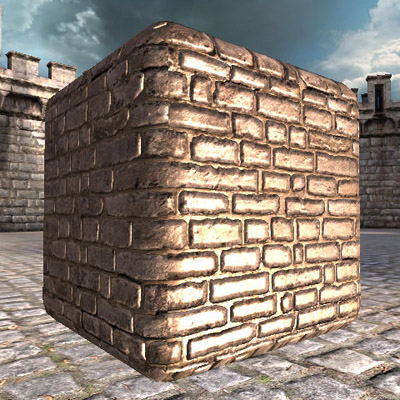
- Mobile Specular Color (モバイル スペキュラ カラー) - スペキュラ ハイライトのために使用するカラーです。なお、光源のカラーは自動的に考慮されますが、必要な場合は、このプロパティを使用して好みのハイライト カラーを得ることができます。この設定項目を変更しても、パフォーマンス上の影響はありません。

- Mobile Specular Power (モバイル スペキュラ パワー) - スペキュラ ハイライトの明瞭度 (sharpness) を設定します。この値が高くなると明瞭度が増し、小さくなると広がってどんよりとしたハイライトになります。ピクセル単位のスペキュラを使用している場合は、頂点単位のスペキュラ光源処理よりも一層明瞭度が増します。この設定項目を変更しても、通常、パフォーマンス上の影響はありません。
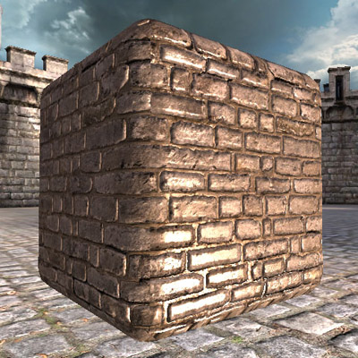
- Mobile Specular Mask (モバイル スペキュラ マスク) - スペキュラをプリミティブのうちの特定の領域に制限すると役立つ場合があります。このためには、スペキュラ マスク データをメッシュの頂点カラーかマスク テクスチャにペイントするか、単にディフューズ テクスチャにあるチャンネルをマスクとして使用します。また、Luminance (ルミナンス) を選ぶことによって、ディフューズ テクスチャのルミナンス値をスペキュラ マスクとして使用することもできます。デフォルトでは、スペキュラがマスクされていない (Constant) ため、プリミティブ全体が均一に影響を受けます。スペキュラ マスクを有効にすると、パフォーマンスがいくらか影響を受けます。
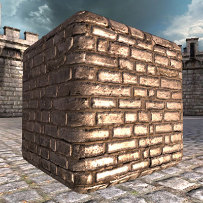
エミッシブ (発光色)
以下の設定項目は、エミッシブ光源処理のエフェクトのためのものです。エミッシブ光源処理を使用すると、マテリアルが表面から光を発するように見せることができます。
- Mobile Emissive Texture (モバイル エミッシブ テクスチャ) - エミッシブ テクスチャを設定して、エミッシブ光源処理を有効にします。(Mobile Emissive Color Source (モバイル エミッシブ カラー ソース) が Emissive Texture (エミッシブ テクスチャ) に設定されている場合です) エミッシブ カラーは光源処理に影響を受けません。基本的には、マテリアルを暗いところで発光させることができます。エミッシブ光源処理を有効にすると、パフォーマンス コストが少しばかりかかります。
- Mobile Emissive Color Source (モバイル エミッシブ カラー ソース) - エミッシブ光源処理のソースを選択します。
- Emissive Texture (エミッシブ テクスチャ) - エミッシブ光源処理が有効になるのは、テクスチャが Mobile Emissive Texture (モバイル エミッシブ テクスチャ) プロパティにバインドされている場合に限られます。
- Base Texture (ベース テクスチャ) - エミッシブ光源処理を有効にして、ベース テクスチャ をエミッシブ カラーとして使用します。
- Constant (コンスタント) - エミッシブ光源処理を有効にして、コンスタント カラーを使用します。有効になった場合は、カラーの値が Mobile Emissive Color (モバイル エミッシブ カラー) プロパティに設定されます。コンスタントなエミッシブは、プリミティブ全体に渡って均一なエミッシブ 光源処理を行いますが、パフォーマンス上は最も負荷がかからないタイプのエミッシブ光源処理です。
- Mobile Emissive Color (モバイル エミッシブ カラー) - Emissive Color Source が Constant に設定されている場合に、エミッシブ光源処理のために使用するカラーを設定します。この設定項目を変更しても、パフォーマンス上の影響はありません。
- Mobile Emissive Mask Source (モバイル エミッシブ マスク ソース) - プリミティブのサーフェス全体に及ぶエミッシブ光源の寄与度をスケーリングすることが可能になります。
- Constant (コンスタント) - エミッシブのマスキングを無効にします。パフォーマンス上最もコストがかからないモードです。
- Vertex Color (Channel) (頂点カラー (チャンネル)) - 指定された頂点カラーチャンネルに基づいてエミッシブの寄与度をスケーリングします。
- Base Texture (Channel) (ベース テクスチャ (チャンネル)) - 指定されたベース テクスチャ カラーチャンネルに基づいてエミッシブの寄与度をスケーリングします。
- Mask Texture (Channel) (マスクテクスチャ (チャンネル)) - 指定されたマスク テクスチャ カラーチャンネルに基づいてエミッシブの寄与度をスケーリングします。
- Normal Texture Alpha (法線テクスチャ アルファ) - 法線マップのアルファ チャンネルに基づいてエミッシブの寄与度をスケーリングします。これを機能させるには、有効な法線テクスチャを用意する必要があります。
環境
以下の設定項目によって、環境マッピングを有効にして、その見え方を設定することができます。環境反射は通常、オブジェクトに光沢をつけたり、一層メタリックな感じを与えるために使用されます。- Mobile Environment Texture (モバイル 環境テクスチャ) - 球状環境反射マッピングを有効にして、使用する環境マップ テクスチャを設定します。法線マップ テクスチャがバインドされている場合は、環境マッピングがピクセル単位で計算されます。それ以外の場合は、頂点単位で計算されます。環境マッピングによって、マテリアルはパフォーマンス上の負荷をかなりかけることになります。
- Mobile Environment Mask Source (モバイル環境マスク ソース) - プリミティブのサーフェス全体に及ぶ環境マッピングの寄与度をスケーリングすることが可能になります。
- Constant (コンスタント) - 環境マップのマスキングを無効にします。パフォーマンス上、最もコストがかからないモードです。
- Vertex Color (Channel) (頂点カラー (チャンネル)) - 指定された頂点カラーチャンネルに基づいて環境マップの寄与度をスケーリングします。
- Base Texture (Channel) (ベース テクスチャ (チャンネル)) - 指定されたベース テクスチャ カラーチャンネルに基づいて環境マップの寄与度をスケーリングします。
- Mask Texture (Channel) (マスクテクスチャ (チャンネル)) - 指定されたマスク テクスチャ カラーチャンネルに基づいて環境マップの寄与度をスケーリングします。
- Normal Texture Alpha (法線テクスチャ アルファ) - 法線マップのアルファ チャンネルに基づいて環境マップの寄与度をスケーリングします。これを機能させるには、有効な法線テクスチャを用意する必要があります。
- Mobile Environment Map Amount (モバイル 環境マップ量) - 環境反射マップの「強度」を設定します。言い換えれば、環境マップがプリミティブの最終的なカラーにどの程度寄与するかを設定します。この値が大きくなると、環境反射が鮮明になります。この設定項目を変更しても、パフォーマンス上の負荷はかかりません。
- Mobile Environment Blend Mode (モバイル 環境ブレンド モード) - 環境マップがプリミティブ上でベースのディフューズ光源とどのように結合するかを設定します。デフォルトでは、環境反射がディフューズ光に加わります。ただし、反射量に基づいて補間することによって、ディフューズ テクスチャ カラーを「置き換える」ことも可能です。この設定によってパフォーマンス上重大な負荷がかかることはありません。
- Add (追加) - 環境反射がディフューズ光の寄与度に追加されます。これによって、鮮明で光沢のある反射を作り出すことができます。これがデフォルトです。
- Lerp (線形補間) - ディフューズ テクスチャと環境テクスチャが環境反射の量に基づいてブレンドされます。この設定によって、プリミティブの鮮明度を上げずにメタリックのエフェクトを出すことができます。
- Mobile Environment Color (モバイル環境カラー) - 環境マップ反射のカラーをスケーリングします。この設定項目を変更しても、パフォーマンス上の影響はありません。
- Mobile Environment Fresnel Amount (モバイル環境フレネル量) - ゼロ以外の値を設定すると、フレネル エフェクトが有効になります。これは、正面から見たときのサーフェスの反射を弱めます。この値は、フレネルが、環境マップの寄与率にどのくらいの影響を与えるのかを制御します。通常、フレネルはよりリアルな反射をもたらしますが、この機能を有効にすると、マテリアルにパフォーマンス上のオーバーヘッドが付加されます。
- Mobile Environment Fresnel Exponent (モバイル環境フレネル指数) - フレネルが有効になっている場合、フレネル エフェクトの明瞭度を設定します。この値が大きくなると、反射が見えるようになるにはより大きな視射角が必要となります。値が小さくなると、広く反射するサーフェスが得られます。この設定を変更すると、通常、パフォーマンスにごくわずかな影響が出ます。
リムライト
以下のプロパティによって、リムライト エフェクトがマテリアルで有効になります。リムライトは、オブジェクトのシルエットをハイライト処理するために使用します。- Mobile Rim Lighting Strength (モバイル リムライト 強度) - ゼロ以外に設定することで、リムライトを有効にして、リムライト エフェクトの強度を設定します。この機能は、パフォーマンス上の負荷をかなりかけます。
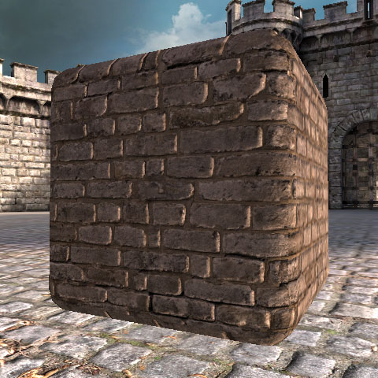
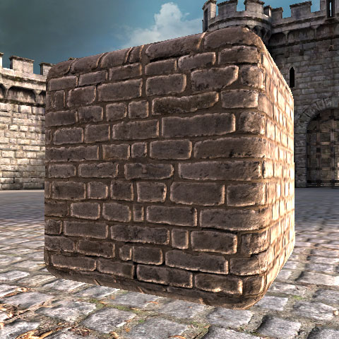

- Mobile Rim Lighting Exponent (モバイル リムライト 指数) - オブジェクトのシルエットの周りにできるリムライトの明瞭度を設定します。指数の値が大きくなると、正面から見るとより引きしまったハイライトになります。値が小さくなると、サーフェス全体にエフェクトが広がります。通常、この設定を変更してもパフォーマンス上の負荷は大きくなりません。
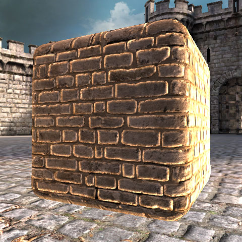

- Mobile Rim Lighting Mask Source (モバイル リムライト マスク ソース) - プリミティブのサーフェス全体に及ぶリムライトの寄与度をスケーリングすることが可能になります。
- Constant (コンスタント) - リムライトのマスキングを無効にします。パフォーマンス上最もコストがかからないモードです。
- Vertex Color (Channel) (頂点カラー (チャンネル)) - 指定された頂点カラーチャンネルに基づいてリムライトの寄与度をスケーリングします。
- Base Texture (Channel) (ベース テクスチャ (チャンネル)) - 指定されたベース テクスチャ カラーチャンネルに基づいてリムライトの寄与度をスケーリングします。
- Mask Texture (Channel) (マスク テクスチャ (チャンネル)) - 指定されたマスク テクスチャ カラーチャンネルに基づいてリムライトの寄与度をスケーリングします。
- Normal Texture Alpha (法線テクスチャ アルファ) - 法線マップのアルファ チャンネルに基づいてリムライトをスケーリングします。これを機能させるには、有効な法線テクスチャを用意する必要があります。

- Mobile Rim Lighting Color (モバイル リムライト カラー) - リムライト エフェクトのカラーを設定します。この設定を変更しても、パフォーマンス上の負荷はかかりません。
Bump Offset (バンプ オフセット)
以下のプロパティによって、「バンプ オフセット」エフェクトを有効にすることができます。これは、ごく初歩的な形態の視差変位によるテクスチャのサンプリングをシミュレートするものです。基本的には、見る者の位置に基づいて、マテリアルに 3D 深度の外見をもたらす機能です。バンプ オフセットは World Properties (ワールド プロパティ) 内で適用される必要があることにご注意ください。詳細については、 このセクション をご参照ください。- Use Mobile Bump Offset (モバイル バンプ オフセット を使用する) - バンプ オフセット エフェクトを有効にします。 重要 : この機能が有効な場合は、Mask Texture (マスク テクスチャ) を設定する必要があります。 Mask Texture の赤のチャンネル は、あらゆるテクセルにおけるバンプ オフセットの高さをサンプリングするために使用されます。モバイル プラットフォーム上でバンプ オフセットを使用する場合は、必ず Mask Texture をバインドする必要があります。この機能を有効にすると、パフォーマンス上かなり高い負荷がかかります。

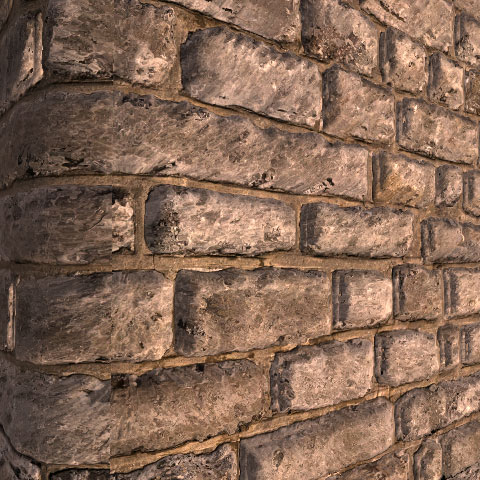
- Mobile Bump Offset Reference Plane (モバイル バンプ オフセット参照プレーン) - このエフェクトを使用するテクスチャ空間におけるおよその高さを指定します。値が 0 の場合は、テクスチャが完全にサーファスから離れて歪んでいるように見えます。値が 0.5 (デフォルト) の場合は、サーフェスの一部が飛び出す一方で、沈み込む部分も出てきます。

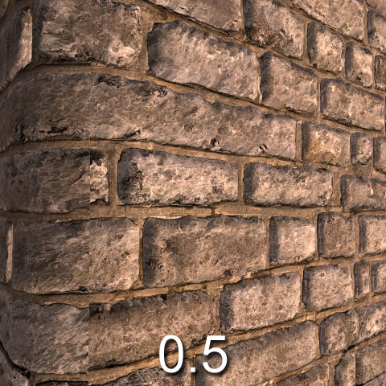
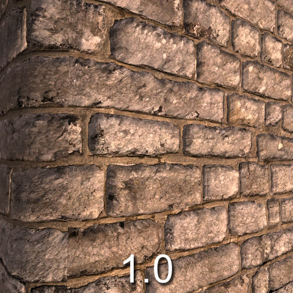
- Mobile Bump Offset Height Ratio (モバイル バンプ オフセット高さ比率) - 深度に掛け合わせる値です。この値が大きくなれば、深度はより極端になります。標準的な値の範囲は、0.02 から 0.1 です。
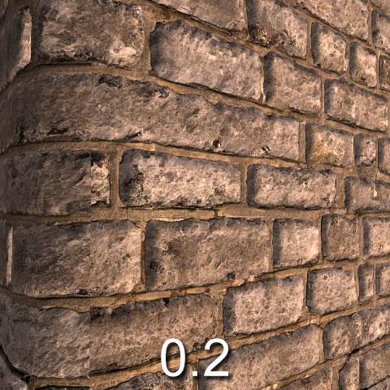


マスキング
マスク テクスチャは、汎用的な目的で使用されるテクスチャです。バンプ オフセットやエミッシブ / 環境のスケーリングなどの他のさまざまなモバイル マテリアル 機能で使用されます。他の機能を使用していてマスキングが必要になった場合は、セットアップするだけで済みます。 Mobile Mask Texture (モバイル マスク テクスチャ) - テクスチャをマスク テクスチャに設定します。マスク テクスチャの用途は、当該マテリアルで有効になっている他の機能に応じてさまざまあります。マスク テクスチャに保存することができる機能の例としては、バンプ オフセット量、詳細テクスチャ ブレンド係数、エミッシブ / 環境 / リムライトのマスキングなどがあげられます。 Mobile Mask Texture Tex Coords Source (モバイル マスク テクスチャ テクスチャ座標 ソース) - マスク テクスチャをサンプリングする際に使用する頂点テクスチャ座標のセットを選択します。最大で 4 つある利用可能な UV セットから、使用する UV セットを 1 つ選択することができます。テクスチャ ブレンド
次の設定項目は、追加テクスチャをベース テクスチャとブレンドすることによって、追加テクスチャをマテリアルに適用するためのものです。この第 2 のテクスチャは、アニメートすることも可能です。それには、Texture Transform (テクスチャ変換) プロパティを使用します。- Mobile Detail Texture (モバイル詳細テクスチャ) - 当該マテリアルに使用する「詳細テクスチャ」を設定します。詳細テクスチャは、テクスチャ間のブレンドに使用するのが普通です。あるいは、アニメートされたテクスチャとベース テクスチャをブレンドするのに使用します。詳細テクスチャが設定されている場合、Mobile Texture Blend Factor Source (モバイル テクスチャ ブレンド係数ソース) プロパティで設定されている値が使用されて、詳細テクスチャがベース テクスチャとブレンドされることになります。詳細テクスチャを設定すると、サンプリングする余分なテクスチャが導入されるため、パフォーマンス上の負荷がかかります。

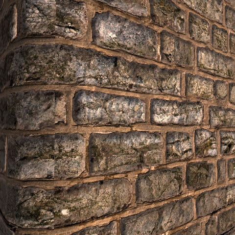
- Mobile Detail Texture Tex Coords Source (モバイル詳細テクスチャ テクスチャ座標ソース) - 詳細テクスチャに使用する頂点テクスチャ座標セットを選択します。なお、デフォルトでは、メッシュの第 2 の UV セットが、詳細テクスチャのために使用されます。使用可能な 4 つの UV セットからどれを選んでも構いません。この設定項目を変更しても、パフォーマンス上大きな影響はありません。
- Mobile Texture Blend Factor Source (モバイル テクスチャ ブレンド 係数 ソース) - ベース テクスチャと詳細テクスチャをブレンドするために使用する「アルファ」値のソースを選択します。メッシュに保存されている頂点カラーか、あるいは、Mobile Detail Texture (モバイル詳細テクスチャ) プロパティを利用して、個別のテクスチャ マスク セットのどちらかを使用することができます。 大抵の場合、個別の詳細テクスチャをマスクとして使用する方が、頂点カラーを使用するよりも負荷が大きくなります。
- Lock Color Blending (ロック カラー ブレンド) - 高度な機能です。プラットフォームのシステム設定項目によって無効化が強制されている場合であっても、当該マテリアルでテクスチャ ブレンドが使用できるようになります。特別な場合のマテリアルを作成する際にシステムの設定値をオーバーライドできる機能であると見なすことができます。通常は、この機能を有効にすることはないでしょう。
カラー ブレンド
以下の設定項目によって、ペイントされた頂点カラーをモバイル マテリアルに適用させることができるようになったり、単一の均等なカラー スケーリングをマテリアル全体に適用することができるようになります。 Use Mobile Uniform Color Multiply (モバイル 均等カラー乗算の使用) - 有効になっている場合は、Default Uniform Color (デフォルト均等カラー) で指定されているカラー値に基づいて、マテリアルのカラーをスケーリングします。これを有効にすると、パフォーマンス上ごくわずかな負荷がかかります。 Default Uniform Color (デフォルトの均等カラー) - Use Mobile Uniform Color Multiply (モバイル 均等カラー乗算の使用) が有効化されている場合に、マテリアルをスケーリングするカラーを設定します。この設定を変更しても、パフォーマンス上の負荷はかかりません。 Use Mobile Vertex Color Multiply (モバイル頂点カラー乗算の使用) - 頂点カラーのスケーリングを有効にします。この機能が役立つ場合というのは、メッシュの中にペイントした頂点カラーのレンダリング時に使用する場合であるか、あるいは、頂点カラーアニメーションを伴うパーティクル システムを利用する場合です。この機能を有効にしても、パフォーマンス上わずかな負荷しかかかりません。テクスチャの変形
以下の設定項目によって、マテリアルをアニメートさせることができます! ベース テクスチャまたは詳細テクスチャのいずれのテクスチャ UV でも、動的に、平行移動および回転、スケーリングすることが可能です。また、固定スケールをテクスチャ UV に適用したり、単純な正弦ベースの振動を利用することも可能です。- Use Mobile Texture Transform (モバイル テクスチャ変換の使用) - TRUE の場合は、変形エフェクトが当該マテリアルに有効になります。この機能を有効にした場合は、パフォーマンス上、中程度の負荷がかかります。
- Mobile Texture Transform Target (モバイル テクスチャ 変形ターゲット) - ベース テクスチャか、詳細テクスチャのどちらのテクスチャ UV セットを変形すべきかを選択します。
- Transform Center X (変形中心 X) - 回転あるいはスケーリングの変形で、X についての変形の中心を指定します。
- Transform Center Y (変形中心 Y) - 回転あるいはスケーリングの変形で、Y についての変形の中心を指定します。
- Panner Speed X (パナー速度 X) - テクスチャが X についてパンする速度を指定します。
- Panner Speed Y (パナー速度 Y) - テクスチャが Y についてパンする速度を指定します。
- Rotate Speed (回転速度) - テクスチャが回転する速度を指定します。正の値は時計回りです。負の値は反時計回りです。
- Fixed Scale X (固定スケール X) - X についてテクスチャがスケーリングされる量を指定します。
- Fixed Scale Y (固定スケール Y) - Y についてテクスチャがスケーリングされる量を指定します。
- Sine Scale X (正弦スケール X) - 振動エフェクトのために正弦波が X についてスケーリングされる量を指定します。
- Sine Scale Y (正弦スケール Y) - 振動エフェクトのために正弦波が Y についてスケーリングされる量を指定します。
- Sine Scale Frequency Multiplier (正弦スケール周波数) - 振動エフェクトにともなって使用される周波数のための乗数です。
頂点アニメーション
下記のプロパティは、特殊な頂点アニメーション エフェクトを設定するために使用されます。これらの典型的な使用法としては、単純でパラメトリックなアニメーション エフェクトを用いて、葉や旗、布をプロシージャルにアニメートさせるというものがあげられます。骨格のアニメーションに比較して、この種のアプリケーションは負荷が非常に低い。これは、グラフィックス ハードウェアによって実行されるためです。- Use Mobile Wave Vertex Movement (モバイル ウェーブ頂点ムーブメント使用) - GPU ベースの頂点のアニメーションを、当該マテリアルのために有効にします。これを有効にすると、パフォーマンス上のオーバーヘッドが著しく増加します。
- Mobile Tangent Vertex Frequency Multiplier (モバイル接線頂点周波数乗数) - この動きは、オブジェクトの中心線から頂点までのベクターに対して垂直になります。これによって、正弦曲線の左右の動きを少しばかり作り、風 (木や旗などのための) をシミュレートします。値が 1 の場合は、動きのサイクルが 1 秒間隔になります。
- Mobile Vertical Frequency Multiplier (モバイル垂直周波数乗数) - 接線の動きと同じように、この設定値は正弦曲線の上下の動きをワールドの z 軸と平行に作ります。値が 1 の場合は、動きのサイクルが 1 秒間隔になります。普通、この値は、Tangent Vertex Frequency Multiplier (モバイル 接線 頂点 周波数 乗数) からオフセットしておくことによって、ループしているようには見えないようにします。
- Mobile Max Vertex Movement Amplitude (モバイル最大頂点ムーブメント振幅) - 接線方向の正弦波または垂直方向の正弦波の頂点位置 (ワールドにおける未変更の位置) からの距離です。この値に、メッシュ上にペイントされた頂点カラーの red (赤) チャンネルが乗じられます。 頂点カラーがペイントされていない場合には、動きは適用されません。
- Mobile Sway Frequency Multiplier (モバイル揺れ周波数乗数) - 揺れの動きは、オブジェクトの y 軸 (ワールド空間へ変換される) とオブジェクトの位置を使用しながら、フルのオブジェクトの回転を作り出すことによって、樹冠の揺れなどをシミュレートすることができます。この乗数は、標準の 1 秒サイクルを速めたり遅めたりするのに使用します。
- Mobile Sway Max Angle (モバイル揺れ最大角) - 揺れのための、正弦波の頂点における最大角度です。この値に、メッシュ上にペイントされた頂点カラーの green (緑) チャンネルが乗じられます。 頂点カラーがペイントされていない場合は、動きは適用されません。
平坦化
平坦化を設定する
テクスチャの平坦化には、.ini ファイルの設定値がいくつかあり、これらをゲームのために正しく設定する必要があります。それらは次の通りです。[MobileSupport] bShouldFlattenMaterials=True平坦化したテクスチャを新たなアセットに保存できるようになります。この機能が有効になっていなければ、マテリアルのプロパティにおいて Auto Flatten Mobile (自動平坦化 モバイル) がたとえ有効になっていても、平坦化したテクスチャは生成されません。
[MobileSupport] FlattenedTextureResolutionBias=1平坦化したテクスチャのために解像度の偏向を設定します。この数値が高くなると、生成されるテクスチャの解像度は低くなります。たとえば、FlattenedTextureResolutionBias が 1 に設定されると、512 × 512 のテクスチャを使用するグラフ ネットワーク マテリアルは、256 × 256 のテクスチャに平坦化されます。
Lightmass とモバイル マテリアル
ライトマップの修正
法線マップ化された光源処理は、Lightmass で生成されたライトマップの中にベークすることができます。そのためには、Use Normal Maps for Simple Lightmaps (シンプル ライトマップのための法線マップを使用する) というオプションをレベルの WorldInfo プロパティの中で有効にします。Lightmass が法線マップを見つけることができるようにするために、必ずマテリアルのシェーダー ネットワーク部の中で法線マップを調整するようにします。 さらに、(インスタンス単位の汚れなどを付け加える場合などに) テクスチャを使ってライトマップを修正するには、 StaticMeshComponent 上で MobileSettings 設定項目の中にあるSimpleLightmapModificationTexture (単純なライトマップ修正テクスチャ) および SimpleLightmapModificationFunction (単純なライトマップ修正関数) プロパティを使用します。
モバイル用シェーダーの生成
他の注意事項
- シェーダーは起動中にデバイス上でコンパイルされます。したがって、ゲームの起動時間に大きな影響を及ぼします。さまざまなマテリアルの設定コンビネーションを用いることによって、ユニークなシェーダーがコンパイルされます。なお、2 つのマテリアルがあり、テクスチャだけが異なりそれ以外同一である場合、コンパイルされるシェーダーは 2 つではなく 1 つです。
- BlendMode や LightingModel といった、ある種のマテリアル プロパティは、モバイル用レンダラにおいても尊重されています。制限はいくらかあるものの、半透明マテリアルや付加的マテリアルを通常どおりに作成することができます。同様に、各種 usage (使用) フラグも、デカール マテリアルやパーティクル マテリアルなどの境界を示すために依然として使用されています。これらの設定項目は、正規の「Unreal」のマテリアルで行われるのと同様に、必ず正しく設定される必要があります。
- 法線マップ化された光源処理は、Lightmass で生成されたライトマップの中にベークすることができます。そのためには、Use Normal Maps for Simple Lightmaps (シンプル ライトマップのための法線マップを使用する) というオプションを、レベルの WorldInfo プロパティの中で有効にします。Lightmass が法線マップを見つけることができるようにするために、必ずマテリアルのシェーダー ネットワーク部の中で法線マップを調整するようにします。
- 動的光源の機能は現在のところ大きな制約があることに留意してください。平行光源はかなり適切にサポートされており、天空光 / ライト環境の機能の中には、キャラクター上で機能するものもあります。ライトマップの中にベークされた静的な光源は、非常に良く機能します。ただし、光源とシャドウの設定項目を組み合わせた他の機能については、まだ多くがサポートされていません。たとえば、単一のプリミティブに影響を及ぼす複数の直接光源は、特別な場合にのみサポートされています (ライト環境の影響)。
- 現在、動的にリットされた骨格メッシュのために、天空光源が常に有効になっています。これらは、ライト環境を使用して、Up および Down カラーを計算するとともに、さらに、マテリアル内で設定された設定値を使用してレンダリングを行います。
- フォグ (fog) はモバイル上でもサポートされていますが、その機能は他のプラットフォームのものとは異なります。フォグ ボリュームのかわりに、レベル固有の距離に基づくフォグの設定項目が、レベルの World Properties (ワールド プロパティ) 内で設定されます。個々のマテリアルは、Allow Mobile Fog (モバイル フォグを許可する) というオプションを使用してフォグされないようにできます。
- ガンマ補正 はモバイル ハードウェアでサポートされていません。コンテンツ内でこの問題に対処するには、 このセクション? を参照してください。
- モバイル デバイスでは SimpleLightmaps (平行光源の情報はベークされていません) を使用します。単純な光源マップ (simple lightmaps) のカラースケールは 2.0 に固定されています。したがって、光源マップによって 2 倍以上ディフューズ テクスチャの輝度を上げることができないということになります。
- モバイル スイッチを使用して作成されたマテリアルは、エディタ内のスイッチを使用して設定されたエフェクトを表示しません。原因は、エディタが Direct3D を使用する一方で、モバイル デバイスが OpenGL ES2 を使用し、エフェクトを表示するためには異なるシェーダーが必要となるためです。モバイル プレビュアーを使用すると、デバイス上でマテリアルがどのように見えるかを確認することができます。